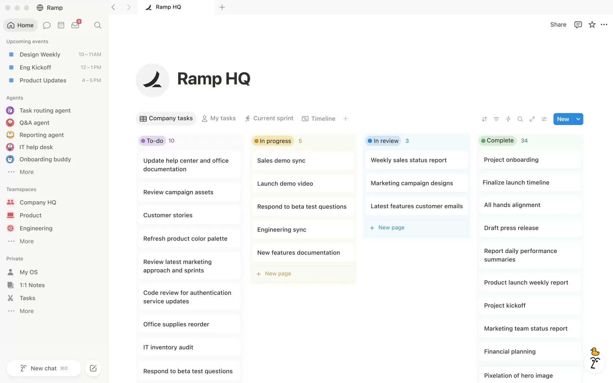
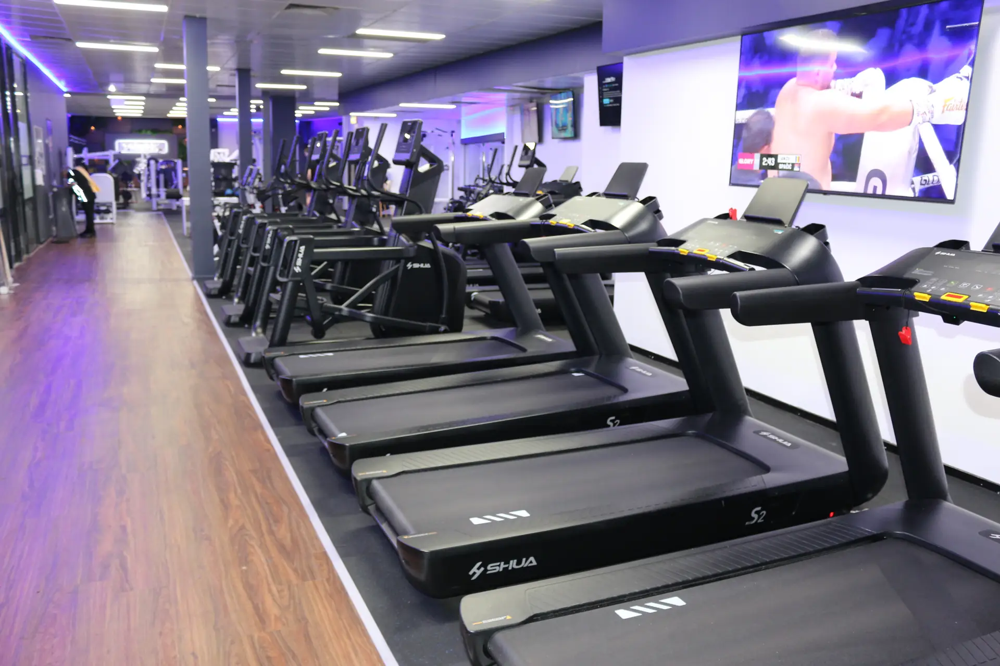
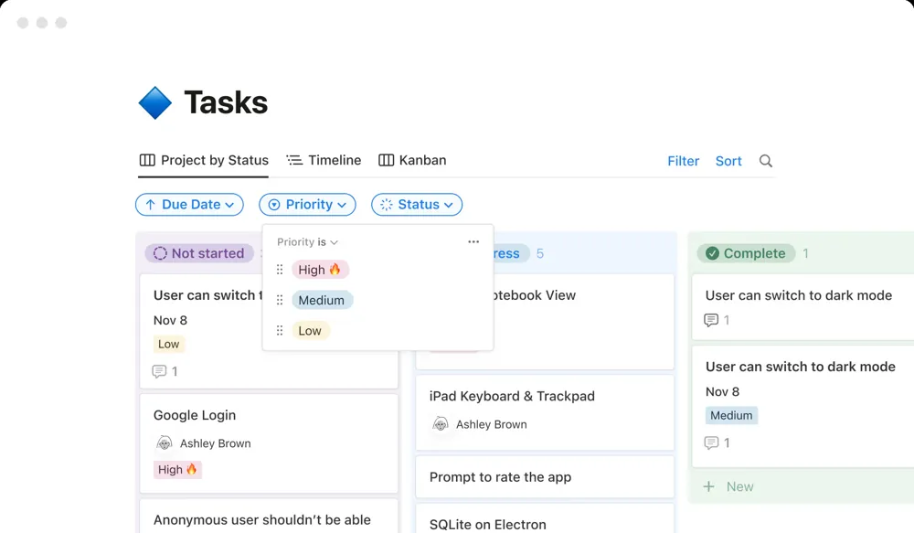
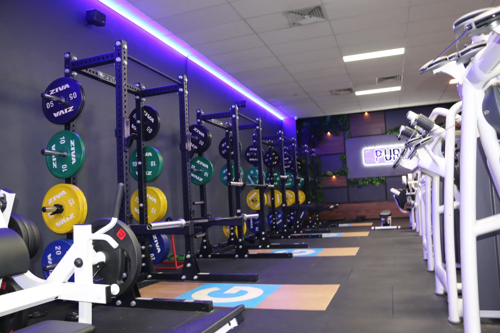

Every one of those is somewhere a task can hide. We are going to one.
Before we talk software
You already run systems
01
The timetable
Nobody rings the head coach to ask when Tuesday 6pm is. It is on the wall and in the app. That is an operational system.
02
The grading syllabus
Every coach grades to the same standard because the standard is written down, not remembered.
03
The membership system
Joiners, payments, cancellations. One place. Nobody keeps it in their head.
04
Class check-in
Who is in the room tonight. Nobody counts heads by phone call.
Not techy. Organised. The business behind the clubs deserves the same thing the clubs already have.
Definition
An operational system is where the work lives in a place, not in a person.
Test 01
Can a new starter find it without asking?
The timetable template, the supplier, the brand kit. If finding it means ringing someone, it lives in a person.
Test 02
Can someone else pick it up halfway?
Sick day, holiday, resignation. The task has to carry enough that the next person keeps going.
Test 03
Does it keep working when you are on leave?
If the opening slows down because one person is away, the system is that person.
If the answer to any of the three is no, it lives in a person.
Where Pursuit is going
What got us to 8 won't get us to 15
8
Clubs today
WA and VIC. Every one opened off a list that lived in someone's head.
7
Openings in the next 12 months
More openings in one year than in the last several combined.
2
New states
NSW and SA. Teams on the ground who have never opened a Pursuit club.
4
Venue formats
Performance Centre, Dual Stream, Muay Thai Studio, BJJ Studio. Each opens differently.
Every opening runs off the same list of jobs. Right now that list does not exist anywhere you can open.
Three questions
Where is it?
Ask three people, each outside their own lane. Nobody is expected to know.
Question 01
What size is the neon logo sign at Morley, and who supplied it?
On the board: one card. Size, supplier, quote, lead time, owner, invoice. Search "neon".
Question 02
Where is the opening timetable template right now?
On the board: linked inside the "Finalise the opening timetable" card. Search "timetable".
Question 03
What did the builder quote for the last fit-out, and where is that quote?
On the board: attached to the "Builder quotes" card in Pre-handover, with the trades sequence. Search "quote".
Not a memory test. Every answer should be one search.
Today
How an opening runs now
Club_Opening_Checklist_FINAL_v3.xlsxTimetable template (somewhere in Teams)one of my many files on the computerCall AdamWanneroo notes.docxCall CourtneyThe old Belgravia sheetWhatsApp: "does anyone have the…"Builder quotes (email, March)Opening party run sheet (Leslie's laptop)Recruitment ad (last year's, edited)
"We all kind of know different parts of it."
The knowledge is real. It is spread across people's heads.
Files sit in Teams, Word, laptops and inboxes. Finding one means asking.
Updates happen by phone call. Two people carry the whole list.
Nothing is deliberately dropped. Things fall through the gaps between people.
The risk
Today, every question goes through two people
8 clubs7 openings coming3 statesCoachesClub managersBuilders and tradesSuppliersMarketingNew hires
→
Adam
One phone. One memory.
Courtney
One inbox. One laptop.
→
The answer, eventually.
Every question waits for one of two people to be free. Every answer lives only as long as they remember it.
Fine at 8 clubs. At 15 it breaks. Not the people. The maths.
One question
Courtney is on leave for a month from tomorrow.
Does the next opening go ahead?
Why an operational system
Build once. Use every time.
01
Nothing depends on one person
The task lives in the system, with its detail and its links. Whoever holds it can change. The task stays.
02
Anyone can pick it up
A new starter reads the card and acts on it. No phone call, no "who do I ask".
03
Every opening is faster than the last
Each opening improves the template. The 15th club launches with the quality of the 1st in a fraction of the time.
The effort is front-loaded. The payoff is permanent.
Part 1 · Section A
What is Notion
Three building blocks. Nothing you have not used before in another shape.
What is Notion
This is what it looks like

Sidebar, leftEvery page and teamspace in the workspace. Home at the top. Pursuit lives here as its own section.
A page, with a database on it"Ramp HQ" is a page. The board under it is a database of tasks. Each card opens as its own page.
Views along the topCompany tasks, My tasks, Current sprint, Timeline. Same tasks, different lens.
Comments and mentionsTop right. The update sits on the work. The person you mention gets it.
What is Notion
A shared workspace where our pages, tasks and documents live in one place, and everyone sees the same thing.
Block 01
Pages
A document that lives online. Anyone with access opens the same, current version. No attachments, no v3_FINAL.
Block 02
Databases
A list of things: tasks, clubs, SOPs. Each item has properties like owner, team, phase, status.
Block 03
Views and filters
The same list, sliced. By person, by team, by phase. As a board, a table, a timeline or a calendar.
Contextualise it
Things you already use
Today
In Notion
What changes
A Word document
→
A page
Everyone opens the same current version. No emailing copies.
An Excel or Google Sheet of tasks
→
A database
Same rows and columns. Each row opens into its own page.
Sticky notes on a whiteboard
→
A board view
Drag a card from To do to Done. It stays moved when you leave the room.
Files dumped in Teams
→
The wiki
Organised, searchable, and every page links to the pages it relies on.
A phone call for an update
→
A comment on the task
The update sits on the work it is about. Whoever needs it reads it.
"Does anyone have the timetable template?"
→
Search
Type it. Open it. Nobody interrupted.
Not a new skill. The same things, in one place.
Nine words Stays on screen in hands-on
The whole vocabulary
Workspace
All of Bailey Group in Notion. You log into this.
Page
A document. Anything can be a page, including a task.
Database
A list of pages that share properties. Our board is one.
Card
One task. A row in the database, shown as a card on the board.
Property
A field on a card: Team, Owner, Phase, Status.
View
A way of looking at the database: table, board, timeline, calendar.
Filter
Show only some cards: mine, this phase, this team.
Comment
A note on a card. Lives with the work, not in a chat.
@mention
Type @ and a name. They get a notification. That replaces the phone call.
Views
One list. Four ways to look at it.
Table
Every task, every property. Sort and filter like a sheet.
Board
Cards in columns by status. Drag to move.
Timeline
Start and end dates on a Gantt. Sequence the trades.
Calendar
The same dates on a month. What lands this week.
Change the lens, never re-type. The board owner sequences trades on the timeline. Leslie sees the same tasks as a board.
Our workspace
How it's laid out
Workspace
Bailey Group HQ
One workspace for all the brands. Shared calendar, meetings, docs.
Home
Pursuit Home
The front door for everything Pursuit. Start here.
Wiki
How we do things. SOPs, templates, logins, the timetable template. Written once, linked everywhere.
Boards
Work in motion. One board per opening, plus the day-to-day boards each team runs.
Templates
The New Club Opening template. Duplicate it, never rebuild it.
Log in with your work email. Personal Gmail accounts can't see the workspace. If your invite hasn't landed, say so now.

Part 1 · Section B
How we'll use it
One template. Every opening.
One task, told twice
The life of the neon sign
Today
Adam mentions a neon sign for the new club on a call.
Someone finds a supplier on their phone. Quote lands in an inbox in March.
Size agreed on a call. Written down nowhere.
Wall gets measured after the order is placed.
Sign arrives 20mm too wide for the wall.
Next opening: start again from scratch. Who was the supplier?
On the board
Card: "Order neon logo sign for the opening". Team Marketing, Owner Leslie, Phase Pre-launch.
Description: size, colour, supplier and quote linked. Watch out: measure the wall first.
Status moves as it happens. Blocked = waiting on the wall measurement, with a comment to Courtney.
Done, with the final spec and invoice attached to the card.
Anyone can answer "what size, who supplied it" with one search.
Next opening: duplicate the card, change the size. Ten minutes.
First build
The New Club Opening template
Trigger
Lease signed
The moment a club is real, the board exists.
Step 1
Duplicate
Copy the template. Every task, owner and phase comes with it.
Step 2
Rename
"New Club Opening" becomes the club's name.
Step 3
Kickoff
Board owner prunes to the club type, confirms owners, dates phase 1.
Then
Weekly sprint
Run off the board until the doors open.
The board owner
One named person per opening. Owns the board, not every task on it.
Prunes at kickoff: single stream, dual stream or renovation. Property tasks out if the deal came ready-made.
Makes sure every card has an owner and a description before the first sprint.
Runs the weekly sprint.
What the template carries
The non-negotiables for every club, from lease conditions to opening party.
Optional tasks tagged, with the condition for removing them written on the card.
Links to the templates each task uses, inside the task.
Duration guides, not fixed dates. Dates are set per club at kickoff.
Phases Proposed · agree in the room
The five phases of an opening
1
Pre-handover
Lease signed → keys
Lease conditions, council, permits
Builder brief, quotes, trades sequenced
Layout and first walkthrough
2
Fit-out
Keys → build complete
Demolition, waste, base build
Trades in order: plumbing, electrical, walls, paint
Recruitment triggered
3
Pre-launch
8–12 weeks out → opening
Timetable, staff training
Pre-marketing, socials, early-bird offer
Systems, memberships, signage
4
Opening
Commencement day
Doors open, first classes
Launch event
Trainer on the floor
5
Post-opening
First 30 days
Defect checks
Bedding in coaches and timetable
Review: what changes in the template
Every card carries a phase. Filter to Pre-launch and you see everything that has to be done before the doors open.
Ownership
Team and Owner. Every card has both.
Property · Team
OperationsMarketingSalesCoaching
Which part of the business does the work
Teams don't change between clubs. The template ships with every card already tagged.
Property · Owner
CourtneyLeslieBrettBrianNew hire, NSW
The one person who makes it happen
People change. Someone leaves, someone joins, a different state has a different name in the box. The task doesn't care.

Filter the board to one Owner, or type a name into search: everything they are working on, across every club, on one screen. That is how you check on progress without a phone call.

Part 1 · Section C
A best-practice task
The card is the whole system. Get the card right and everything else follows.
Anatomy of a good card
Pursuit · New Club Opening › Marketing
Design 4 launch social tiles (1200×1200) for the opening
Team
Marketing
Owner
Leslie
Phase
3 · Pre-launch
Status
In progress
Optional
No · every club
Dates
6 weeks out → 2 weeks out (guide: 5 days)
Done looks like: four 1200×1200 tiles in the Pursuit brand kit, approved by the board owner, uploaded to the club's launch folder. Copy uses the early-bird offer for this club.
Watch out: Studio logo for single-stream clubs, Performance Centre logo for full gyms. Never both on one tile.
Title: verb + what done looks likeNot "social media posts". Say the thing that gets made.
Team and OwnerWhich part of the business, and the one person.
Phase and StatusWhere in the opening it sits, and where it's at now.
Optional, with the condition"Remove if the slab is already poured."
Dates as a guide, set per clubDuration lives on the template. Real dates at kickoff.
Description a new starter could act onDone looks like. Links inside. The catch to avoid.
Before and after
The same task, written twice
How it arrives
Social media posts
Owner
(blank)
Description
(blank)
Staff training
Owner
Operations?
Description
finalise schedule
To the standard
Design 4 launch social tiles (1200×1200) for the opening
Team · Owner
Marketing Leslie
Phase
3 · Pre-launch
Done: four tiles in the brand kit, approved, in the launch folder. Links: brand kit, tile template, this club's offer copy.
Finalise the opening timetable from the club timetable template
Team · Owner
Operations Courtney
Phase
3 · Pre-launch
Done: every class for every discipline offered at this club, on the standard template, loaded into the membership system. Link: timetable template (wiki).
Optional tasks say when to remove them: "Slab pour. Remove if the slab is already down at handover."
Vote
Which card could a new starter act on?
Card A
Signage
Owner
(blank)
Description
(blank)
No owner, no spec, no done. A word, not a task.
Card B
Neon sign
Owner
Leslie
Description
Sort the sign for the new club
Has an owner. Still needs a phone call: what size, which supplier, done when?
Card C
Order neon logo sign (1800×450mm) for the opening
Team · Owner
Marketing Leslie
Phase
3 · Pre-launch
Done: sign installed on the reception wall two weeks before opening. Supplier and quote linked. Watch out: measure the wall before ordering.